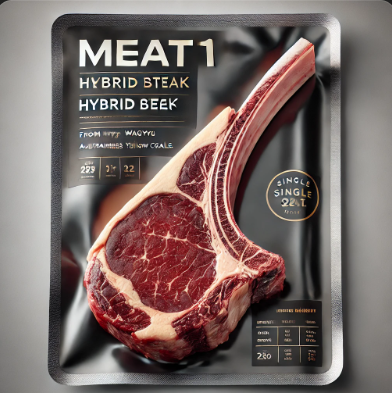
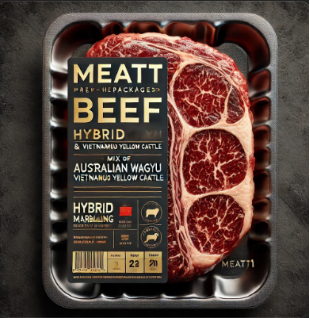

T1 Fram
Quality & Innovation
Về chúng tôi
Chúng tôi tự hào là những người gốc Việt Nam, thuộc trường THPT Thống Nhất và chúng tôi muốn khẳng định biết rằng mình là ai
Bò lai Wagyu Úc - Bò vàng Việt Nam
Đặc điểm của bò Wagyu Úc
- Chất lượng thịt cao cấp: Thịt bò Wagyu nổi tiếng với độ vân mỡ cẩm thạch cao, giúp thịt mềm, thơm ngon.
- Khả năng tăng trưởng tốt: Wagyu Úc phát triển nhanh, cho trọng lượng lớn.
- Chăm sóc yêu cầu cao: Bò Wagyu cần chế độ dinh dưỡng đặc biệt để đạt chất lượng thịt tốt nhất.
Đặc điểm của bò vàng Việt Nam
- Thích nghi tốt: Chịu đựng khí hậu nóng ẩm, kháng bệnh tốt.
- Ít tốn công chăm sóc: Cần ít thức ăn tinh, chủ yếu ăn cỏ và phụ phẩm nông nghiệp.
- Trọng lượng nhỏ hơn: Bò vàng Việt Nam có tầm vóc nhỏ, thịt dai hơn bò ngoại.
Ưu điểm của bò lai Wagyu Úc - Bò vàng Việt Nam
- ✅ Cải thiện chất lượng thịt: Thịt bò lai có độ vân mỡ tốt hơn bò vàng thuần chủng, mềm và thơm ngon hơn.
- ✅ Dễ nuôi hơn: Bò lai kế thừa khả năng thích nghi tốt từ bò vàng Việt Nam, phù hợp với điều kiện chăn nuôi ở Việt Nam.
- ✅ Chi phí nuôi hợp lý: Không đòi hỏi chế độ ăn uống quá cầu kỳ như Wagyu thuần chủng.
- ✅ Hiệu quả kinh tế cao: Giá trị thương phẩm cao hơn bò nội địa, phù hợp với mô hình chăn nuôi thương phẩm.
Công nghệ thụ tinh nhân tạo (Artificial Insemination - AI)
Mô tả: Đây là phương pháp lấy tinh bò Wagyu thuần chủng từ Úc (hoặc các nguồn giống tốt) và thụ tinh nhân tạo cho bò cái vàng Việt Nam.
Ưu điểm:
- ✅ Giảm chi phí nhập khẩu bò đực giống.
- ✅ Đảm bảo chất lượng tinh tốt hơn so với phối giống tự nhiên.
- ✅ Dễ dàng lai tạo số lượng lớn, kiểm soát nguồn gốc di truyền.
TOMAHARK
BA CHỈ BÒ
Quy trình chăn nuôi bò T1 Fram
Quy trình chăn nuôi nghiêm ngặt áp dụng công nghệ cao, đảm bảo môi trường chăn nuôi lành mạnh cho giống bò T1 phát triển một cách tốt nhất.
Nguồn thức ăn sử dụng cho chăn nuôi được quản lý theo từng giai đoạn phát triển của vật nuôi.
Chăm sóc bê con (0 – 6 tháng tuổi)
- Sữa mẹ & bổ sung dinh dưỡng: Bê con cần bú mẹ hoàn toàn trong 3 tháng đầu để tăng cường sức đề kháng.
- Chế độ ăn dặm: Từ tháng thứ 2, cho ăn cỏ mềm, bột ngũ cốc, vitamin, khoáng chất.
- Quản lý sức khỏe: Tiêm phòng đầy đủ (lở mồm long móng, tụ huyết trùng, viêm da nổi cục).
Giai đoạn tăng trưởng (6 – 18 tháng tuổi)
- Thức ăn: Chủ yếu là cỏ tự nhiên (cỏ voi, cỏ Mulato) kết hợp với thức ăn tinh (bột ngô, bột đậu nành, cám gạo, cám ngô).
- Chế độ vận động: Cho bò đi lại trong khu vực rộng để phát triển cơ bắp tốt, nhưng không quá vận động để tránh làm săn chắc thịt quá mức.
Giai đoạn vỗ béo & tạo vân mỡ (18 – 30 tháng tuổi)
- Thức ăn chính: Chuyển dần sang chế độ grain-fed (ngũ cốc) với bột ngô, lúa mì, yến mạch, cám gạo, bia ủ lên men, rỉ mật đường, cỏ thủy canh (Fodder Hydroponic).